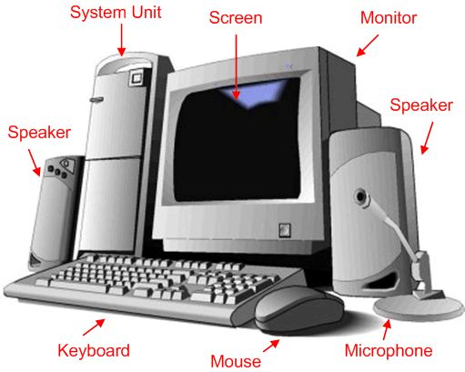
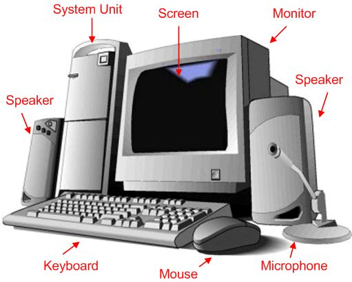

What is a Computer?
A computer is an electronic device that processes data and performs tasks according to instructions. It is used in various areas of life, including education, business, and entertainment.
A computer is an electronic device that processes data and performs tasks according to instructions. It is used in various areas of life, including education, business, and entertainment.
Monitor
The monitor displays information from the computer.System Unit
The system-Unit is the computer mainKeyboard
The keyboard is used to type information into the computer.Mouse
The mouse is used to point and click on objects on the screen.